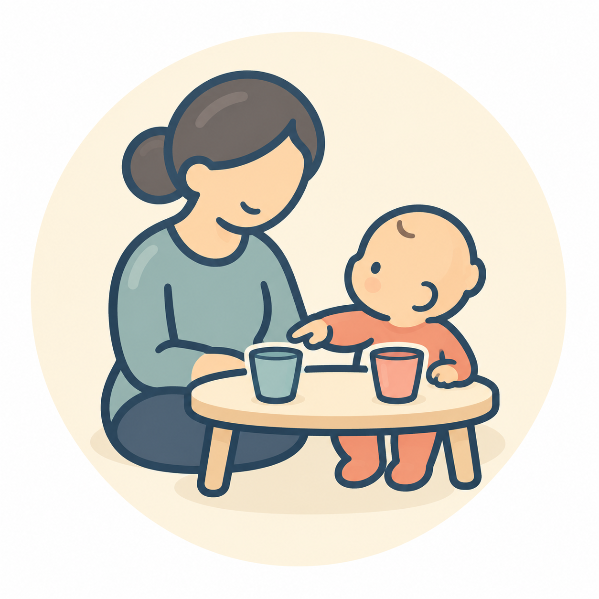

冊子「こどものおくすりガイド」とあわせて読める年齢別ガイドです。
こどものくすり ｜ 冊子 P06 ｜ 幼児期
幼児期の薬の飲ませ方
子どもの気持ちを大切に、一緒に工夫しましょう。
年齢は目安です。お子さんの様子に合わせてご覧ください。
わかりやすい言葉で伝えましょう
「元気になるためのお薬だよ」など、子どもにわかる短い言葉で説明しましょう。薬をお菓子だと伝えるなど、だまして飲ませることは避けましょう。
自分で選べることをつくりましょう
コップを選ぶ、座る場所を決めるなど、安全な範囲で子どもが選べる工夫を取り入れましょう。

飲めたことを認めましょう
少しでもできたことを認め、次につながる経験にしましょう。うまく飲めなかったときも、叱ったり、無理強いしたりしないようにしましょう。
詳しい飲ませ方・困ったときは
冊子「こどものおくすりガイド」ver.2.0のP06と内容を照合しました。原稿照合日：2026年10月27日。
関連する詳しい記事に出典と相談の目安を掲載しています。薬ごとの指示は、医師・薬剤師に確認してください。